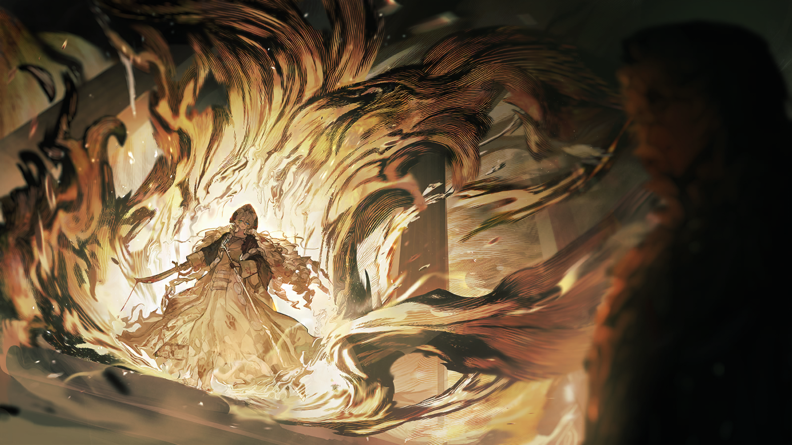
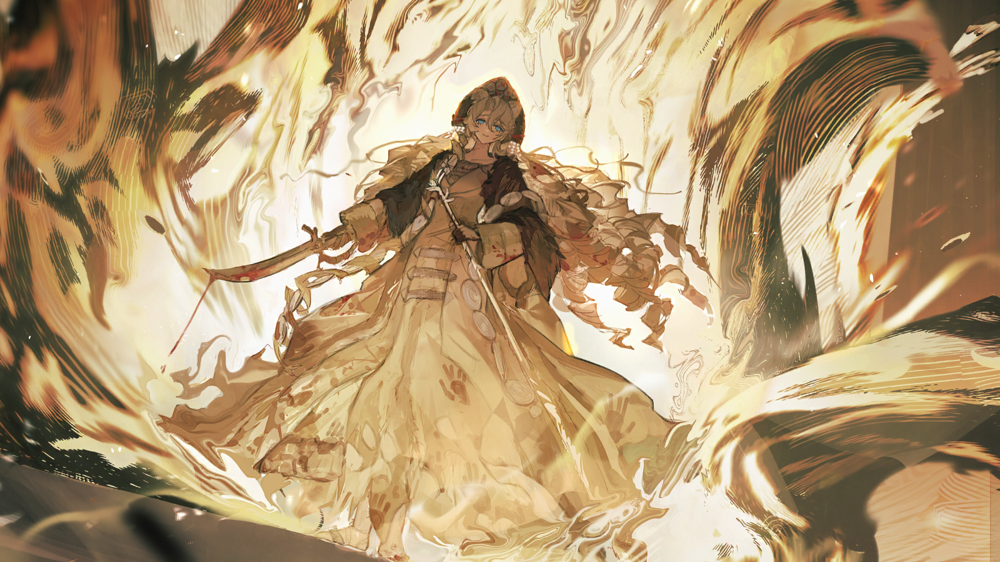
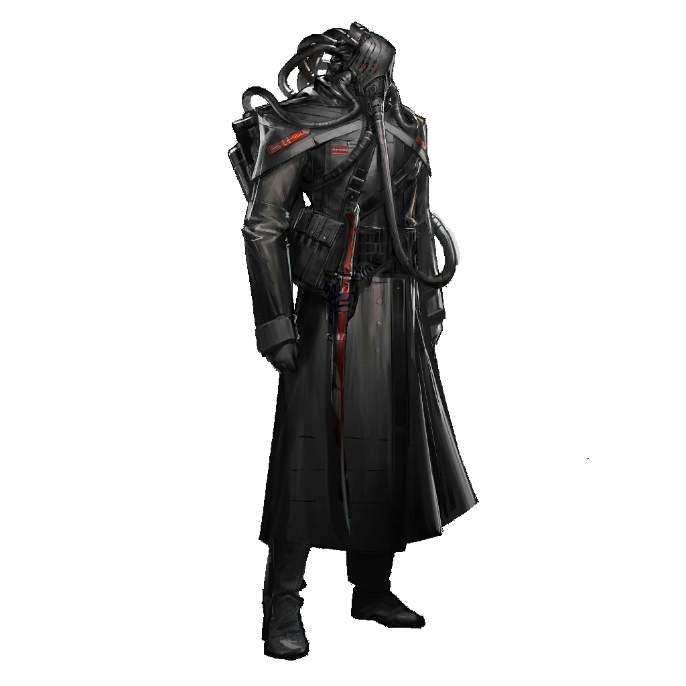
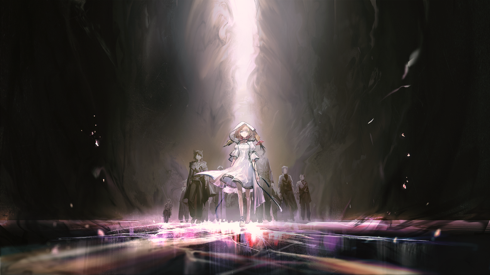

我已经不记得是从什么时候开始，那只黑色的羽兽频繁出现在我的梦里。
那是只漂亮的羽兽，羽毛没有一丝杂色，还有一样漆黑的爪锋和喙。
我在与它仔细对视后记住了它的模样，从此它便成了我梦里的常客。
它总是出现在我生活中的各个角落，宫殿的横梁，卧室的窗外，园林里的果树上——
用盯着猎物的眼神盯着我。
它好像始终在等待我死亡后变成腐肉的那一刻，它仿佛知道，我必将如此。
我从来没有与任何人提起过这个只属于我的特别的梦魇，我深知这样会令我看上去软弱。
直到有一天，我长到可以拉动弓箭的年纪。我拾起祖辈传下来的那把长弓，就像一千年前的祖辈射落骏鹰的旗帜那样——
我终于射中了它。

我亲眼看着它从苹果树的枝头摔落在地上，化成一摊血肉融进泥土里。
在那之后，我终于不再做梦了。
我觉得维特说得不对，我应该的确是见过那片苹果林的。
我不可能记错，在那座宫殿的几十年时光里，一定存在过一个夏天的午后……
我曾经在那片树林中玩闹，有人把一颗苹果交到了我的手里。
是她……母亲，姐姐……？
我清楚地记得苹果的香气，还有那时的阳光。
多么温暖啊……
急切的声音
……沦陷……
急切的声音
陛下的安危——
……不……
急切的声音
……陛下，听我说。
急切的声音
即使如今您必须先离开这里，这也并不意味着我们的努力已经彻底失败。
急切的声音
与……不同，中央集团军仍在与叛军顽强作战，近卫军也同样没有退让。您最忠诚的战士们都还守在身后，我们……
急切的声音
我们终有再回到这里的那日。所以现在——
——什么？
急切的声音
——立刻护送陛下离开！

不。
不——
那究竟是谁？
柔和的声音
——费佳……
急切的声音
陛下！
柔和的声音
我亲爱的。

你……
柔和的声音
你为何如此哀伤，为何如此狼狈？为何你明明看着我……
柔和的声音
却像在注视一个全然陌生的人？
那张脸——不，她从未有机会，像这样——
柔和的声音
……我明白了。你只是累了，必须将背负的一切都从手中放开……
柔和的声音
而这是只有我能做到的事。
柔和的声音
来吧，让我为你卸下痛苦、卸下永无尽头的悔恨……
柔和的声音
费佳，来我身边。
急切的声音
——保护陛下——
呃……
柔和的声音
即使你一无所有，我也会爱你。
柔和的声音
唯有我身边，才是你仅存的归处。
急切的声音
——把——带走！
柔和的声音
……你又要逃走吗？逃去哪里呢？即使知道无论如何我都会找到你？
柔和的声音
我说过了，谁也无法割断我们之间血脉的联系。
柔和的声音
我永远会找到你……
啊，啊——
柔和的声音
我的费佳。
急切的声音
——陛下！

费奥多尔
咳呃——

急切的士兵
抱、抱歉，陛下——不，大人。您在尖叫，我必须叫醒您。

费奥多尔
我——这是……？
急切的士兵
您才睡了两个小时，现在还早，探路的人也还没回来，您可以再休息一会儿。
急切的士兵
您要喝点水吗，这还有煮过的雪水——

费奥多尔
见鬼……你到底在说什么……？
费奥多尔
……维特在哪儿？让他尽快来找我，昨天没结束的议题，今天务必要有个结论。
急切的士兵
您、您在说什么呀……？

费奥多尔
怎么回事……我说的难道不是乌萨斯语吗？
费奥多尔
维特，伊斯拉姆·维特！
费奥多尔
立刻叫他过来，难道还要我亲自去请吗？！
急切的士兵
陛下！您……您难道不记得了吗？
急切的士兵
在我们从圣骏堡撤退到这里的途中，就已经与维特总理分散了。
费奥多尔
……！
费奥多尔环顾四周，他这才意识到自己所在之处并非奢华的宫殿，而是一顶充斥着腐朽霉味的营帐。
紧接着，这几日的回忆，那些他至今都不愿相信的回忆……
全部随着一阵剧烈的疼痛涌上他的脑袋。

维特
我们现在到哪里了？

谨慎的军官
我们离圣骏堡大约有一百五十公里，前面还有三十公里就到苏拉河了。
谨慎的军官
议长——总理阁下，时间已经很晚了，我们是不是先扎营休息——
维特
……不，还不能停下来扎营。
维特
如果在这里被追兵追上，我们面临的会是毫无悬念的死地。
维特
我们必须得保持现在的速度继续行军，只有这样才有可能在今晚趁夜渡过冻结的苏拉河。
谨慎的军官
总理阁下，我尊重您。可是考虑到士兵的状态，这样的行军计划风险太大。
谨慎的军官
雪地行军本就困难，更何况是持续数天的急行。这两天里，我们的队伍已经减员很多了。
谨慎的军官
队伍的士气非常不乐观，再这样下去……
谨慎的军官
我无法保证……剩下的人，还能将陛下安全护送到扎莫列斯。

维特
……上校，如果不是您的队伍在这种境遇里还展现了绝对的忠诚，我会以为您下一句就要建议我们直接将陛下拱手送给叛军了。
谨慎的军官
我绝无此意，阁下！
维特
我相信你作为统帅的判断，可无论如何，我们时刻都有暴露位置的风险。
维特
请战士们再坚持一下吧，把不必要的辎重都抛下，食物和水也可以扔掉一点，我们用不上太多了。

维特
只要能与第九师团本部成功会合，事态会稳定下来的……我们还有机会挽回一切。
维特
恳请战士们，继续抗争……我不能向他们许诺什么，我只能请求他们。现在只有他们，能捍卫乌萨斯最后的尊严了。
谨慎的军官
如果您坚持的话……
身后，一阵叫嚷声传来，维特回过头去，看见两名士兵押着一个被绑得结结实实的人从远处走了过来。
旁边的军官狠狠在他膝盖上踹了一脚，他整个人摔倒在雪地里。

维特
怎么回事？

中级军官
长官！这个畜生疯了，疯了！我们刚刚发现他正在用我们内部的通讯频段向叛军发送信号！
谨慎的军官
……信号发出去了吗？
中级军官
他把终端毁了！我们不知道！
蓦地激动起来的军官冲上前去，抓着那人的头发，把他的脸从雪地里拉了出来。
被抓住的人却只是空洞地看着前方，嘴里涌出的血已经将雪地洇红一片。
含糊不清的声音
……乌萨斯……灭亡……
含糊不清的声音
……我们……不想……送死……
愤怒的军官
……！
维特
冷静点……上校。已经于事无补，别再做更多让军心涣散的事了。
维特
就按军法处置吧……找个隐蔽的地方，别太张扬。
？？？
……这里发生什么了？
维特
陛下，一点小事，不值得您劳心。您现在应该尽可能保留体力——

费奥多尔
……放了他。
愤怒的军官
陛下，他是个叛国者！

费奥多尔
他背叛了什么？一个快要被颠覆的政权，还是一个刚刚被赶出皇宫的皇帝？

维特
陛下，现在到底不是展现仁慈的时候……
费奥多尔
那我反而要问你……维特，我们要去哪？

维特
扎莫列斯，那里远离中央区，有编制完整的第九师团驻扎，是我们可以退守的最佳据点。
维特
我们能在那里重整军队，等待挽回局势的机会……

费奥多尔
这是你们在我刚刚昏迷的时候做的决定？维特，连你也不愿意再与我商议了吗？
维特
陛下，恐怕我们没有别的选择。
费奥多尔
不，我们当然有。
费奥多尔
从圣骏堡逃离是你们的决定，我从来没有下达过要抛弃我的子民，抛弃我的军队的旨意！
费奥多尔
我们为什么要逃？我们还有军队不是吗？我还是中央集团军的统帅不是吗？！
费奥多尔
如果我们一直以来的做法都是正确的，我们一直是受民众拥护的，又怎么可以接受这样退让的结果？
费奥多尔
现在就让我调集军队，现在就回去讨伐那些叛臣，夺回属于我的城市！
谨慎的军官
……

维特
上校，都如实告诉陛下吧……
军官垂下头躲避着皇帝的灼灼目光，在好几息的沉默后，终于鼓起勇气开口。
谨慎的军官
陛下……关于发生在圣骏堡的那场战斗，我们现在可以确信，是城中有奸细提前向叛军透露了关键情报。
谨慎的军官
他们可耻的偷袭让我们措手不及，中央集团军在战斗开始的第一小时就损失了三成的战斗力……后面的战斗，我们更是损失惨重……
谨慎的军官
在我们护送您来到这里的过程中，仅剩的第一、第七师团还在坚决抵抗叛军的攻击。而就在刚刚，前线传回消息……
谨慎的军官
第一师团遭第四集团军战争术师伏击，撤退时被赶来的第二集团军机动部队全歼，无一幸免。
谨慎的军官
在确认第一师团覆灭之后，第七师团指挥官主动投降……

费奥多尔
什……
谨慎的军官
事已至此，守卫圣骏堡外围的中央集团军全军覆没，残余的编制只剩下扎莫列斯的第九师团。

费奥多尔
哈……啊……
维特
这就是现状，陛下。没有半句虚言。
维特
我们必须抓紧时间，抓紧每一个还能重整旗鼓的机会——我们必须立刻动身了。
听到维特的话语，费奥多尔依然伫立原地，他嘴唇翕动着，却仿佛被风雪吞没了声音。
风在一片死寂中渐渐小了下来，片片雪花消融在他的肩头。

费奥多尔
告诉我吧……倒向叛军的“奸细”是谁？是因为资源调配法案利益受损的新贵族，还是某个失去了抵抗意志的军人？
费奥多尔
还是在我身边……无数个已经对乌萨斯失望透顶的人。
维特
我希望您可以将当下的情况视作一时失利，这并不意味着我们一直以来的努力是错误的。
维特
我们还不能拱手把国家让给那些可耻的狂人，他们的野心会把这个国家拖入万劫不复的战争泥沼，我们绝对不能让他们如愿。
维特
陛下，为了您的国家，您不该在这个时候——

费奥多尔
……离开圣骏堡的时候，在那场大火里，我看到她了。
费奥多尔
她究竟是谁……她为什么，长得那么像，母亲……？

维特
陛下！
费奥多尔
我终究是失败了……不，也许我从来都没有成功过。
费奥多尔
从平定大叛乱——那场虚假的胜利开始，我坐在那个可笑的皇位上几十年来，看到的只有一个又一个假象。
费奥多尔
这个皇位从来不该属于我……
维特
陛下，我可以理解您现在并不在状态——您的确是受惊了，但您万万不该动摇。直到现在，您也是乌萨斯君主，唯一的君主。

费奥多尔
……够了……
费奥多尔兀自走到那名倒在雪地里的士兵身边，将他扶起，解开了他身上的绳索。
费奥多尔
……走吧。
谨慎的军官
……陛下！
费奥多尔
向所有人下达我的旨意……
费奥多尔
从现在开始，不愿意继续战斗的，还想活命的，都可以直接离开，或者向圣骏堡现在的主人投降。
费奥多尔
……我不希望再有任何一个人为我而死——
皇帝的话音未落，一柄黑色的利刃，从那人的胸膛穿了出来。

“皇帝的利刃”
自从我宣誓为乌萨斯效忠以来，这柄剑还从来没有沾染过如此可鄙的血。
“皇帝的利刃”
这都是因为您，甚至没有勇气当众处死一名叛徒。
费奥多尔
你——内卫——？
费奥多尔
为什么——
“皇帝的利刃”
别再任性了，陛下。
“皇帝的利刃”
认清您的责任吧，即使是现在，也还有您应该做的事。
费奥多尔
是啊……是啊！所有人都可以指责我，因为我最大的过错便是无能！
费奥多尔
可即使是这样，我也不能接受被你们这样的叛徒指摘。
费奥多尔
因为当我被篡权者威胁乃至赶出皇宫、赶出圣骏堡时，你们就袖手旁观，又一次背叛了乌萨斯。
费奥多尔
只有等到要处决一个毫无还手之力的弱者时，你们才选择出现，什么“利刃”、什么“巫怪”、什么“乌萨斯的意志”……
费奥多尔
就和从前无数次印证过的那样，你们不过是一群为了私心而行动的刽子手和叛徒——
维特
……这实在是太无礼了。
“皇帝的利刃”
别再做浪费时间的事，维特。
“皇帝的利刃”
立刻恢复行军，我们会找出剩下的背叛者。
维特
不……意外已经发生了，不能再按原来的计划行动了。
维特
我们不能就这样去扎莫列斯，如果叛军追踪到那里，第九师团也无法抵抗他们的围攻。
维特
把队伍分成两部分，我来带领大部队吸引注意力，分出小部分部队，用最隐秘的方式，护送陛下去图利斯卡亚。
维特
一定要保护好陛下，他的存活，是我们仍未被那些野心家击溃的重要证明……
维特
只是现在，先给他换上平民的衣服……而且通知下去，行军途中，所有人都不要再称呼他为“陛下”了。
维特
你们，和陛下一起行动吧。
“皇帝的利刃”
不，你们走。

维特
这……
“皇帝的利刃”
剩下的部队，不能抵抗叛军，甚至不能拖延。
“皇帝的利刃”
但是我们能。国度能。
“皇帝的利刃”
这是唯一的办法。
维特
……
“皇帝的利刃”
皇帝问，当皇宫被攻破时，我们在哪。
“皇帝的利刃”
那时，我们正直面圣愚。
“皇帝的利刃”
即使它撕碎我们的同胞，就像撕碎一张张白纸。留下的，十不存一。
“皇帝的利刃”
是我们，使它分身乏术。是我们，使这里的人逃出生天。
“皇帝的利刃”
而如今，我们将会再次创造这样的机会。不为任何人，而为乌萨斯，也只为，乌萨斯。
维特
……
维特
乌萨斯……向你们致敬。
“皇帝的利刃”
他们发现了队伍的位置。他们来了。
“皇帝的利刃”
……圣愚没有离开圣骏堡。留守城中的，几近覆没。
“皇帝的利刃”
已经抵达的，两人挡住了行军。仍在极北的，没有回应呼唤。
“皇帝的利刃”
加上你我，一共四人。
“皇帝的利刃”
为了彻底阻拦叛国者，必须做出决断。
“皇帝的利刃”
嘶……呼……
“皇帝的利刃”
……是的……
“皇帝的利刃”
就让我们作为陛下的武器……真正发挥效用。
“皇帝的利刃”
尽管如今，已经不是那位陛下的时代——
“皇帝的利刃”
我们也应当偿还。
“皇帝的利刃”
我们也应当守卫。
在高速战舰的轰鸣声中，警报的红色，将天幕笼罩。即使是内卫，身躯也在远处那样的庞然大物面前变得渺小。
然而这样的躯壳，却也是唯一能阻挡对准此处的舰炮和疾驰的军队的存在。
“皇帝的利刃”
呵……
“皇帝的利刃”
……叛国者，这是你们求得的湮灭。
自混沌中生出的能量不断逸散，从一缕尘烟似的黑灰色开始，逐渐铺满肉眼可及的整片大地。
在那漆黑满溢的瞬间，一切都安静下来。
呼吸声，只有断续而沉重的呼吸声。
仿佛那团颤动着的黑色仍有余温，仿佛随着它的每一次搏动，远方就多出一片浑浊的死寂。
那是一场不辨天日的、漆黑的“大雪”。

第二集团军士兵
长官，前线检测到大量不明污染反应，阵地通讯已被切断，无法联络指挥中心——

军官
第四集团军派遣的战争术师呢？
第二集团军士兵
没有收到汇报，信号已丢失！
军官
……通知下去，全体撤退，立刻返回军舰！

第四集团军军官
……该死。
第四集团军军官
邪魔碎片泄漏了，污染正在扩散……这些刽子手宁愿自杀拖延时间也不愿交出皇帝，倒是成全了自己那令人恐惧的名声。
第四集团军军官
通知第二集团军司令部，我军决定暂时撤退。
副官
就这样撤退吗，长官？第二集团军那些人不是说，带着陛下——带着皇帝逃走的队伍，就在对岸？
第四集团军军官
内卫出手了，已经没有继续追下去的必要。
副官
他们的行动速度不会比我们的精锐步兵更快，我们可以绕行——
第四集团军军官
你能准确判断“国度”的扩散范围吗？除了目前正在琥珀宫里的那位之外，还有谁能毫发无伤地穿越污染？哼，可笑……
第四集团军军官
总之，内卫这一手，两败俱伤。短时间内那小皇帝回来不了。之后就算他想回到圣骏堡，大概也只是来送死而已。
第四集团军军官
毕竟到那时，叶甫根尼元帅早已入主圣骏堡，我们甚至可能该改称他为……
第四集团军军官
“统帅阁下”了。

费奥多尔
……
费奥多尔走出了营帐，换上的衣衫比先前单薄，雪粒擦过他被冻得通红的脸颊，像砂石一般粗粝。
环绕他的士兵都各自沉默着，垂着头不敢迎上他的眼睛。有人更用力地拽紧了系着驮兽的缰绳，直到它在手中发出嘎吱的坚硬声响。
费奥多尔
谁来告诉我，我们现在在哪里？

沉稳的侍从
维特……大人，让我们护送您去图利斯卡亚，除此之外，我们什么都不知道。
费奥多尔
那维特现在在哪里？
侍从们依旧没有回答。他们转身，低声确认着简短的指令。费奥多尔再次意识到，这场出逃从来都不在他的掌握之中。
费奥多尔
到底发生了什么……为什么我周围只剩下了你们？

费奥多尔
……回答我！
沉稳的侍从
抱歉，大人，我没法回答您。但我这里有望远镜……如果您实在想瞧的话，就用它看看吧。
费奥多尔将那冰冷的工具接过，举到眼前。
他看到了一片漫无边际的、由血肉和钢铁的残骸组成的黑色“泥沼”。
费奥多尔
这是……
费奥多尔
到底怎么会……怎么会变成这样……
费奥多尔
……呕……
沉稳的侍从
大人，“国度”还在蔓延，我们不能停留在这儿了！
沉稳的侍从
大人！我们必须得尽快离开——
费奥多尔
不……你听见了吗？
费奥多尔
那是什么声音？
在长久的、令人恐惧的寂静之后，费奥多尔似乎又听见了陌生的响动。
他听见与冰面冻结相似的声音，仿佛有无数神经自行从身体里伸出，扎进眼前凝滞的昏黑之中，延展到每一个原本不可触及的角落。
而恐惧——对危险的天然恐惧则顺着那些神经流动，像血沿着瓷砖的缝隙流往不同的方向。
一些声音在哭喊，另一些则在奔逃；有人跪在地上把脸撞向墙壁，骨头碎裂的声音隔着遥远的距离。
而后，一开始听到的那种声音，逐渐将这些响动都聚拢到一处——
起初撕裂了那片凝固的漆黑的，只是一道淡色的光芒。
它薄如蝉翼，像冰面最上层开裂的纹路，并不规则。
随后，那淡色的光芒很快开始蔓延。并不刺眼的纹路一层层贯穿黑色的雪，它们彼此咬合、覆盖，向前铺展。
只要是它们经过的地方，黑色就停止了沉浮和翻腾，像被严厉地喝止般安静而冰冷。
空气里不断响起细微的碎裂声。
咔。
咔嚓。
仿佛春天正以肉眼可见的速度降临。
它分隔了寒冬。

？？？
……
就在那条被光芒分开的道路中央，一个孱弱的女孩，正带领着无数衣衫褴褛的人向前走来。
她的脚步缓慢却坚定，每走一步，四周的漆黑便冻结一寸。
淡色的光芒贴着四周层层铺开、凝结，而后不断扩张，将那些代表恐惧与混沌的黑色压缩后同化。
？？？
跨越它吧。
？？？
跨越恐惧，跨越痛苦，跨越一切将我们彼此隔绝的存在……
？？？
你们已经做得很好了。
费奥多尔意识到，她在安抚。安抚那些为此殒命的战士，即使他们是邪魔的造物。同时，她也为自己的同伴，打开一条通往彼岸的道路。
陌生的女孩抬起头，望向那道路的前方。
？？？
啊……
？？？
你们也是……逃难至此的人吗？
？？？
请让我来，帮助你吧。
到最后，费奥多尔只记得那向他伸来的、瘦小的手。
那几乎是一只属于孩子的手。